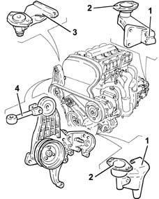
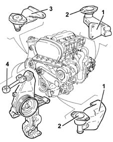
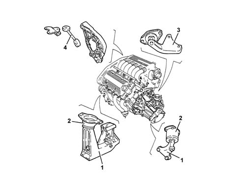
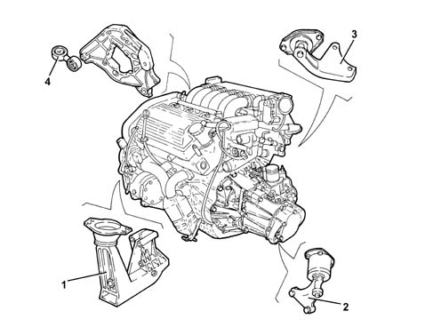
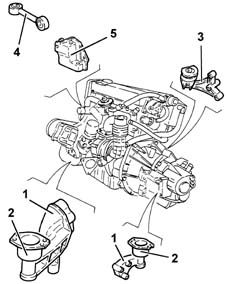
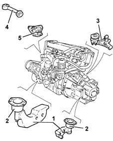
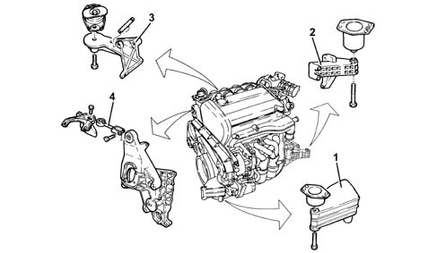
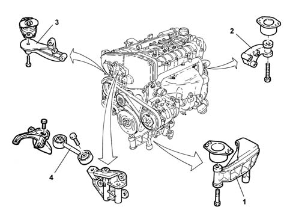
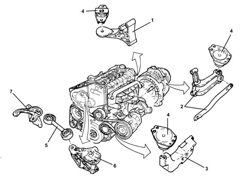

Introduction - POWER UNIT SUPPORTS
- Path
- Descriptions > 10 ENGINE > 1008 POWER UNIT SUPPORTS > Introduction - POWER UNIT SUPPORTS
- Kind
- system description
- Applies to
- all engines; all production periods
- Interactive page
- https://sloeber94.github.io/elrnDB-a156/en/#/3239195
Applies to: engines: 1.6 TS , 1.8 TS; all production periods
The power unit mounting is of the "suspended" type.
The unit is attached to the bodywork by means of two mountings (1) (aluminium) with rubber buffers (2); a third (steel), caliper type (3), attaches to the steering subframe.
To limit jolting, the engine is connected to the bodywork at the top by means of a counterbrace (4).

Applies to: all engines; all production periods
The power unit mounting is of the "suspended" type.
The unit is attached to the bodywork by means of two mountings (1) (aluminium) with rubber buffers (2); a third (steel), caliper type (3), attaches to the steering subframe.
To limit jolting, the engine is connected to the bodywork at the top by means of a counterbrace (4).

Applies to: engines: 2.5 V6; all production periods
The power unit mounting is of the "suspended" type.
The unit is attached to the bodywork by means of two mountings (1) (aluminium) with rubber buffers (2); a third (steel), caliper type (3), attaches to the steering subframe.
To limit jolting, the engine is connected to the bodywork at the top by means of a counterbrace (4).

Applies to: engines: 3.2 V6; all production periods
CONSTRUCTION FEATURES
The power unit mounting is of the 'suspended' type.
The unit is fixed to the bodyshell by means of three supports with flexible damping mountings:
- one in aluminium alloy on the timing side (1);
- one in aluminium alloy on the gearbox side (2);
- one swivelling type in steel (3), which is fastened to the front suspension crossmember
To limit jolting, the engine is connected to the bodywork at the top by means of a counterbrace (4).

Applies to: engines: 1.9 JTD 8v ; all production periods
The power unit mounting is of the "suspended" type.
The unit is attached to the bodywork by means of two mountings (1) (steel (camshaft side; aluminium, gearbox side) with rubber buffers (2); a third (steel) (3), attaches to the steering subframe.
To limit jolting, the engine is connected to the bodywork at the top by means of a counterbrace (4) secured to the engine by a steel mount (5).

Applies to: engines: 2.4 JTD 10v; all production periods
The power unit mounting is of the "suspended" type.
The unit is attached to the bodywork by means of two mountings (1) (aluminium) with rubber buffers (2); a third (steel), caliper type (3), attaches to the steering subframe.
To limit jolting, the engine is connected to the bodywork at the top by means of a counterbrace (4) secured to the engine by a steel mount (5).

Applies to: engines: 2.0 JTS, 2.0 JTS; all production periods
CONSTRUCTION FEATURES
The power unit mounting is of the 'suspended' type.
The unit is fixed to the bodyshell by means of three supports with flexible damping mountings:
- one in aluminium alloy on the timing side (1);
- one in aluminium alloy on the gearbox side (2);
- one swivelling type in steel (3), which is fastened to the front suspension crossmember.
To limit jolting, the engine is connected to the bodywork at the top by means of a counterbrace (4).

Applies to: engines: 1.9 JTD 16v; all production periods
CONSTRUCTION FEATURES
The power unit mounting is of the 'suspended' type.
The unit is fixed to the bodyshell by means of three supports with flexible damping mountings:
- one in steel on the timing side (1);
- one in aluminium alloy on the gearbox side (2);
- one swivelling type in steel (3), which is fastened to the suspension crossmember
To limit jolting, the engine is connected to the bodywork at the top by means of a counterbrace (4).

Applies to: engines: 2.4 JTD 20v; all production periods
SPECIFCATIONS
OPERATION
The power unit supports have the function of supporting the power unit and 'damping' the vibrations through specal flexible mountings and a reaction rod.
COMPOSITION
STRUCTURE
The power unit mounting is of the 'suspended' type.
The unit is fixed to the bodyshell by means of three supports with flexible damping mountings:
- a rear steel one which connects the engine to the flexible mounting fastened to the front suspension crossmember
- a gearbox side steel one which connects the power unit to the flebile mounting fastened to the bodyshell and a strengthening rod connected to the gearbox
- a timing side aluminium one which connects the power unit to the flexible mounting fastened to the bodyshell
To limit jolting, the power unit is connected to the bodyshell at the top by means of a reaction rod.

1. Rigid rear support 2. Rigid gearbox side support 3. Rigid timing side support 4. Flexible damper 5. Reaction rod 6. Engine side reaction rod support 7. Bodyshell side reaction rod support